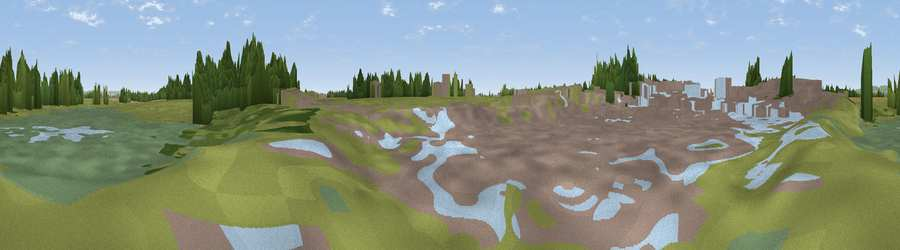

Viewpoint near Birdham
#44520 in England · top 98% of its area beats it · near BirdhamThe view, rendered

A 360° render of this exact spot computed from the terrain model, tree cover and land cover — summer colours, afternoon light, calibrated against photographs of famous viewpoints. Real trees, hedges and buildings will differ in detail.
The panorama
Grey silhouette: terrain skyline in each direction (720 bearings, Earth curvature and refraction included). Dashed green: skyline with trees (+15 m) and buildings (+8 m) as obstacles. Blue strip: how far the ground is visible on each bearing.
Where the view opens
Wedge length = distance to the farthest visible ground on that bearing (vegetation-aware). Rings at 10, 25 and 50 km.
What fills the view
36% grassland · 31% built-up · 16% woodland · 8% wetland · 6% cropland · 3% water
Angular shares of the visible panorama (visual magnitude), not map area. Landscape diversity 0.65 (0–1 Shannon).
Key numbers
More beautiful places nearby
The staircase of upgrades: each row has a higher view potential than everything closer. Driving times are estimates from straight-line distance, calibrated against real road routing — check an actual route before setting out.
| Place | Direction | Drive | Score |
|---|---|---|---|
| Easton Viewpoint | S · 5 km | ~10 min | 36.5 |
| Earnley Viewpoint. | SSW · 5 km | ~12 min | 45.6 |
| Ham Viewpoint | S · 6 km | ~13 min | 47.0 |
| Stoke Clump | N · 8 km | ~17 min | 72.5 |
| Viewpoint near Stoughton | N · 10 km | ~19 min | 79.5 |
| The Trundle | NNE · 11 km | ~21 min | 82.2 |
| Linch Down | N · 16 km | ~29 min | 85.2 |
| Beacon Hill | N · 17 km | ~30 min | 85.8 |
50.80346, -0.81698 · source: osm viewpoint · position refined by local search. Computed location — check access rights before visiting.